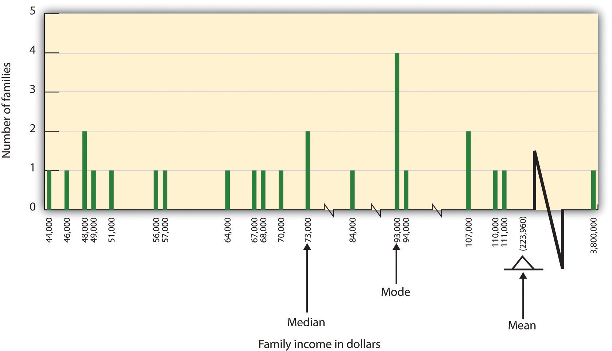

Psychologists agree that if their ideas and theories about human behavior are to be taken seriously, they must be backed up by data. However, the research of different psychologists is designed with different goals in mind, and the different goals require different approaches. These varying approaches, summarized in Table 2.2 "Characteristics of the Three Research Designs", are known as research designs. A research designAn approach used to collect, analyze, and interpret data. is the specific method a researcher uses to collect, analyze, and interpret data. Psychologists use three major types of research designs in their research, and each provides an essential avenue for scientific investigation. Descriptive researchResearch designed to provide a snapshot of the current state of affairs. is research designed to provide a snapshot of the current state of affairs. Correlational researchResearch designed to discover relationships among variables and to allow the prediction of future events from present knowledge. is research designed to discover relationships among variables and to allow the prediction of future events from present knowledge. Experimental researchResearch in which initial equivalence among research participants in more than one group is created, followed by a manipulation of a given experience for these groups and a measurement of the influence of the manipulation. is research in which initial equivalence among research participants in more than one group is created, followed by a manipulation of a given experience for these groups and a measurement of the influence of the manipulation. Each of the three research designs varies according to its strengths and limitations, and it is important to understand how each differs.
Table 2.2 Characteristics of the Three Research Designs
| Research design | Goal | Advantages | Disadvantages |
|---|---|---|---|
| Descriptive | To create a snapshot of the current state of affairs | Provides a relatively complete picture of what is occurring at a given time. Allows the development of questions for further study. | Does not assess relationships among variables. May be unethical if participants do not know they are being observed. |
| Correlational | To assess the relationships between and among two or more variables | Allows testing of expected relationships between and among variables and the making of predictions. Can assess these relationships in everyday life events. | Cannot be used to draw inferences about the causal relationships between and among the variables. |
| Experimental | To assess the causal impact of one or more experimental manipulations on a dependent variable | Allows drawing of conclusions about the causal relationships among variables. | Cannot experimentally manipulate many important variables. May be expensive and time consuming. |
| There are three major research designs used by psychologists, and each has its own advantages and disadvantages. | |||
Source: Stangor, C. (2011). Research methods for the behavioral sciences (4th ed.). Mountain View, CA: Cengage.
Descriptive research is designed to create a snapshot of the current thoughts, feelings, or behavior of individuals. This section reviews three types of descriptive research: case studies, surveys, and naturalistic observation.
Sometimes the data in a descriptive research project are based on only a small set of individuals, often only one person or a single small group. These research designs are known as case studiesA descriptive record of one or more individual’s experiences and behavior.—descriptive records of one or more individual’s experiences and behavior. Sometimes case studies involve ordinary individuals, as when developmental psychologist Jean Piaget used his observation of his own children to develop his stage theory of cognitive development. More frequently, case studies are conducted on individuals who have unusual or abnormal experiences or characteristics or who find themselves in particularly difficult or stressful situations. The assumption is that by carefully studying individuals who are socially marginal, who are experiencing unusual situations, or who are going through a difficult phase in their lives, we can learn something about human nature.
Sigmund Freud was a master of using the psychological difficulties of individuals to draw conclusions about basic psychological processes. Freud wrote case studies of some of his most interesting patients and used these careful examinations to develop his important theories of personality. One classic example is Freud’s description of “Little Hans,” a child whose fear of horses the psychoanalyst interpreted in terms of repressed sexual impulses and the Oedipus complex (Freud (1909/1964).Freud, S. (1964). Analysis of phobia in a five-year-old boy. In E. A. Southwell & M. Merbaum (Eds.), Personality: Readings in theory and research (pp. 3–32). Belmont, CA: Wadsworth. (Original work published 1909)
Another well-known case study is Phineas Gage, a man whose thoughts and emotions were extensively studied by cognitive psychologists after a railroad spike was blasted through his skull in an accident. Although there is question about the interpretation of this case study (Kotowicz, 2007),Kotowicz, Z. (2007). The strange case of Phineas Gage. History of the Human Sciences, 20(1), 115–131. it did provide early evidence that the brain’s frontal lobe is involved in emotion and morality (Damasio et al., 2005).Damasio, H., Grabowski, T., Frank, R., Galaburda, A. M., Damasio, A. R., Cacioppo, J. T., & Berntson, G. G. (2005). The return of Phineas Gage: Clues about the brain from the skull of a famous patient. In Social neuroscience: Key readings. (pp. 21–28). New York, NY: Psychology Press. An interesting example of a case study in clinical psychology is described by Rokeach (1964),Rokeach, M. (1964). The three Christs of Ypsilanti: A psychological study. New York, NY: Knopf. who investigated in detail the beliefs and interactions among three patients with schizophrenia, all of whom were convinced they were Jesus Christ.
In other cases the data from descriptive research projects come in the form of a surveyA measure administered either through interviews or written questionnaires to get a picture of the beliefs or behaviors of a sample of people of interest.—a measure administered through either an interview or a written questionnaire to get a picture of the beliefs or behaviors of a sample of people of interest. The people chosen to participate in the research (known as the sampleThe people chosen to participate in a research project.) are selected to be representative of all the people that the researcher wishes to know about (the populationIn a descriptive research design, the people that the researcher wishes to know about.). In election polls, for instance, a sample is taken from the population of all “likely voters” in the upcoming elections.
The results of surveys may sometimes be rather mundane, such as “Nine out of ten doctors prefer Tymenocin,” or “The median income in Montgomery County is $36,712.” Yet other times (particularly in discussions of social behavior), the results can be shocking: “More than 40,000 people are killed by gunfire in the United States every year,” or “More than 60% of women between the ages of 50 and 60 suffer from depression.” Descriptive research is frequently used by psychologists to get an estimate of the prevalence (or incidence) of psychological disorders.
A final type of descriptive research—known as naturalistic observationResearch based on the observation of everyday events.—is research based on the observation of everyday events. For instance, a developmental psychologist who watches children on a playground and describes what they say to each other while they play is conducting descriptive research, as is a biopsychologist who observes animals in their natural habitats. One example of observational research involves a systematic procedure known as the strange situation, used to get a picture of how adults and young children interact. The data that are collected in the strange situation are systematically coded in a coding sheet such as that shown in Table 2.3 "Sample Coding Form Used to Assess Child’s and Mother’s Behavior in the Strange Situation".
Table 2.3 Sample Coding Form Used to Assess Child’s and Mother’s Behavior in the Strange Situation
| Coder name: Olive | ||||
|---|---|---|---|---|
| Coding categories | ||||
| Episode | Proximity | Contact | Resistance | Avoidance |
| Mother and baby play alone | 1 | 1 | 1 | 1 |
| Mother puts baby down | 4 | 1 | 1 | 1 |
| Stranger enters room | 1 | 2 | 3 | 1 |
| Mother leaves room; stranger plays with baby | 1 | 3 | 1 | 1 |
| Mother reenters, greets and may comfort baby, then leaves again | 4 | 2 | 1 | 2 |
| Stranger tries to play with baby | 1 | 3 | 1 | 1 |
| Mother reenters and picks up baby | 6 | 6 | 1 | 2 |
| Coding categories explained | ||||
| Proximity | The baby moves toward, grasps, or climbs on the adult. | |||
| Maintaining contact | The baby resists being put down by the adult by crying or trying to climb back up. | |||
| Resistance | The baby pushes, hits, or squirms to be put down from the adult’s arms. | |||
| Avoidance | The baby turns away or moves away from the adult. | |||
| This table represents a sample coding sheet from an episode of the “strange situation,” in which an infant (usually about 1 year old) is observed playing in a room with two adults—the child’s mother and a stranger. Each of the four coding categories is scored by the coder from 1 (the baby makes no effort to engage in the behavior) to 7 (the baby makes a significant effort to engage in the behavior). More information about the meaning of the coding can be found in Ainsworth, Blehar, Waters, and Wall (1978).Ainsworth, M. S., Blehar, M. C., Waters, E., & Wall, S. (1978). Patterns of attachment: A psychological study of the strange situation. Hillsdale, NJ: Lawrence Erlbaum Associates. | ||||
Source: Stangor, C. (2011). Research methods for the behavioral sciences (4th ed.). Mountain View, CA: Cengage.
The results of descriptive research projects are analyzed using descriptive statisticsNumbers that summarize the distribution of scores on a measured variable.—numbers that summarize the distribution of scores on a measured variable. Most variables have distributions similar to that shown in Figure 2.5 "Height Distribution", where most of the scores are located near the center of the distribution, and the distribution is symmetrical and bell-shaped. A data distribution that is shaped like a bell is known as a normal distributionA data distribution that is shaped like a bell..
Table 2.4 Height and Family Income for 25 Students
| Student name | Height in inches | Family income in dollars |
|---|---|---|
| Lauren | 62 | 48,000 |
| Courtnie | 62 | 57,000 |
| Leslie | 63 | 93,000 |
| Renee | 64 | 107,000 |
| Katherine | 64 | 110,000 |
| Jordan | 65 | 93,000 |
| Rabiah | 66 | 46,000 |
| Alina | 66 | 84,000 |
| Young Su | 67 | 68,000 |
| Martin | 67 | 49,000 |
| Hanzhu | 67 | 73,000 |
| Caitlin | 67 | 3,800,000 |
| Steven | 67 | 107,000 |
| Emily | 67 | 64,000 |
| Amy | 68 | 67,000 |
| Jonathan | 68 | 51,000 |
| Julian | 68 | 48,000 |
| Alissa | 68 | 93,000 |
| Christine | 69 | 93,000 |
| Candace | 69 | 111,000 |
| Xiaohua | 69 | 56,000 |
| Charlie | 70 | 94,000 |
| Timothy | 71 | 73,000 |
| Ariane | 72 | 70,000 |
| Logan | 72 | 44,000 |
Figure 2.5 Height Distribution

The distribution of the heights of the students in a class will form a normal distribution. In this sample the mean (M) = 67.12 and the standard deviation (s) = 2.74.
A distribution can be described in terms of its central tendency—that is, the point in the distribution around which the data are centered—and its dispersion, or spread. The arithmetic average, or arithmetic meanSymbolized by the letter M, the most commonly used measure of central tendency., is the most commonly used measure of central tendency. It is computed by calculating the sum of all the scores of the variable and dividing this sum by the number of participants in the distribution (denoted by the letter N). In the data presented in Figure 2.5 "Height Distribution", the mean height of the students is 67.12 inches. The sample mean is usually indicated by the letter M.
In some cases, however, the data distribution is not symmetrical. This occurs when there are one or more extreme scores (known as outliers) at one end of the distribution. Consider, for instance, the variable of family income (see Figure 2.6 "Family Income Distribution"), which includes an outlier (a value of $3,800,000). In this case the mean is not a good measure of central tendency. Although it appears from Figure 2.6 "Family Income Distribution" that the central tendency of the family income variable should be around $70,000, the mean family income is actually $223,960. The single very extreme income has a disproportionate impact on the mean, resulting in a value that does not well represent the central tendency.
The median is used as an alternative measure of central tendency when distributions are not symmetrical. The medianThe score in the center of the distribution, meaning that 50% of the scores are greater than the median and 50% of the scores are less than the median. is the score in the center of the distribution, meaning that 50% of the scores are greater than the median and 50% of the scores are less than the median. In our case, the median household income ($73,000) is a much better indication of central tendency than is the mean household income ($223,960).
Figure 2.6 Family Income Distribution
The distribution of family incomes is likely to be nonsymmetrical because some incomes can be very large in comparison to most incomes. In this case the median or the mode is a better indicator of central tendency than is the mean.
A final measure of central tendency, known as the modeThe value or values that occur most frequently in a variable’s distribution., represents the value that occurs most frequently in the distribution. You can see from Figure 2.6 "Family Income Distribution" that the mode for the family income variable is $93,000 (it occurs four times).
In addition to summarizing the central tendency of a distribution, descriptive statistics convey information about how the scores of the variable are spread around the central tendency. Dispersion refers to the extent to which the scores are all tightly clustered around the central tendency, like this:
Figure 2.7
Or they may be more spread out away from it, like this:
Figure 2.8

One simple measure of dispersion is to find the largest (the maximum) and the smallest (the minimum) observed values of the variable and to compute the range of the variable as the maximum observed score minus the minimum observed score. You can check that the range of the height variable in Figure 2.5 "Height Distribution" is 72 – 62 = 10. The standard deviationSymbolized by the letter s, the most commonly used measure of the dispersion of a variable’s distribution., symbolized as s, is the most commonly used measure of dispersion. Distributions with a larger standard deviation have more spread. The standard deviation of the height variable is s = 2.74, and the standard deviation of the family income variable is s = $745,337.
An advantage of descriptive research is that it attempts to capture the complexity of everyday behavior. Case studies provide detailed information about a single person or a small group of people, surveys capture the thoughts or reported behaviors of a large population of people, and naturalistic observation objectively records the behavior of people or animals as it occurs naturally. Thus descriptive research is used to provide a relatively complete understanding of what is currently happening.
Despite these advantages, descriptive research has a distinct disadvantage in that, although it allows us to get an idea of what is currently happening, it is usually limited to static pictures. Although descriptions of particular experiences may be interesting, they are not always transferable to other individuals in other situations, nor do they tell us exactly why specific behaviors or events occurred. For instance, descriptions of individuals who have suffered a stressful event, such as a war or an earthquake, can be used to understand the individuals’ reactions to the event but cannot tell us anything about the long-term effects of the stress. And because there is no comparison group that did not experience the stressful situation, we cannot know what these individuals would be like if they hadn’t had the stressful experience.
In contrast to descriptive research, which is designed primarily to provide static pictures, correlational research involves the measurement of two or more relevant variables and an assessment of the relationship between or among those variables. For instance, the variables of height and weight are systematically related (correlated) because taller people generally weigh more than shorter people. In the same way, study time and memory errors are also related, because the more time a person is given to study a list of words, the fewer errors he or she will make. When there are two variables in the research design, one of them is called the predictor variable and the other the outcome variable. The research design can be visualized like this, where the curved arrow represents the expected correlation between the two variables:
Figure 2.2.2
One way of organizing the data from a correlational study with two variables is to graph the values of each of the measured variables using a scatter plot. As you can see in Figure 2.10 "Examples of Scatter Plots", a scatter plotA visual image of the relationship between two variables. is a visual image of the relationship between two variables. A point is plotted for each individual at the intersection of his or her scores for the two variables. When the association between the variables on the scatter plot can be easily approximated with a straight line, as in parts (a) and (b) of Figure 2.10 "Examples of Scatter Plots", the variables are said to have a linear relationship.
When the straight line indicates that individuals who have above-average values for one variable also tend to have above-average values for the other variable, as in part (a), the relationship is said to be positive linear. Examples of positive linear relationships include those between height and weight, between education and income, and between age and mathematical abilities in children. In each case people who score higher on one of the variables also tend to score higher on the other variable. Negative linear relationships, in contrast, as shown in part (b), occur when above-average values for one variable tend to be associated with below-average values for the other variable. Examples of negative linear relationships include those between the age of a child and the number of diapers the child uses, and between practice on and errors made on a learning task. In these cases people who score higher on one of the variables tend to score lower on the other variable.
Relationships between variables that cannot be described with a straight line are known as nonlinear relationships. Part (c) of Figure 2.10 "Examples of Scatter Plots" shows a common pattern in which the distribution of the points is essentially random. In this case there is no relationship at all between the two variables, and they are said to be independent. Parts (d) and (e) of Figure 2.10 "Examples of Scatter Plots" show patterns of association in which, although there is an association, the points are not well described by a single straight line. For instance, part (d) shows the type of relationship that frequently occurs between anxiety and performance. Increases in anxiety from low to moderate levels are associated with performance increases, whereas increases in anxiety from moderate to high levels are associated with decreases in performance. Relationships that change in direction and thus are not described by a single straight line are called curvilinear relationships.
Figure 2.10 Examples of Scatter Plots

Some examples of relationships between two variables as shown in scatter plots. Note that the Pearson correlation coefficient (r) between variables that have curvilinear relationships will likely be close to zero.
Source: Adapted from Stangor, C. (2011). Research methods for the behavioral sciences (4th ed.). Mountain View, CA: Cengage.
The most common statistical measure of the strength of linear relationships among variables is the Pearson correlation coefficientSymbolized by the letter r, a statistic indicating the strength and direction of a linear relationship. The value of the correlation coefficient ranges from r = –1.00 to r = +1.00., which is symbolized by the letter r. The value of the correlation coefficient ranges from r = –1.00 to r = +1.00. The direction of the linear relationship is indicated by the sign of the correlation coefficient. Positive values of r (such as r = .54 or r = .67) indicate that the relationship is positive linear (i.e., the pattern of the dots on the scatter plot runs from the lower left to the upper right), whereas negative values of r (such as r = –.30 or r = –.72) indicate negative linear relationships (i.e., the dots run from the upper left to the lower right). The strength of the linear relationship is indexed by the distance of the correlation coefficient from zero (its absolute value). For instance, r = –.54 is a stronger relationship than r = .30, and r = .72 is a stronger relationship than r = –.57. Because the Pearson correlation coefficient only measures linear relationships, variables that have curvilinear relationships are not well described by r, and the observed correlation will be close to zero.
It is also possible to study relationships among more than two measures at the same time. A research design in which more than one predictor variable is used to predict a single outcome variable is analyzed through multiple regression (Aiken & West, 1991).Aiken, L., & West, S. (1991). Multiple regression: Testing and interpreting interactions. Newbury Park, CA: Sage. Multiple regressionA statistical technique, based on correlation coefficients among variables, that allows predicting a single outcome variable from more than one predictor variable. is a statistical technique, based on correlation coefficients among variables, that allows predicting a single outcome variable from more than one predictor variable. For instance, Figure 2.11 "Prediction of Job Performance From Three Predictor Variables" shows a multiple regression analysis in which three predictor variables are used to predict a single outcome. The use of multiple regression analysis shows an important advantage of correlational research designs—they can be used to make predictions about a person’s likely score on an outcome variable (e.g., job performance) based on knowledge of other variables.
Figure 2.11 Prediction of Job Performance From Three Predictor Variables
Multiple regression allows scientists to predict the scores on a single outcome variable using more than one predictor variable.
An important limitation of correlational research designs is that they cannot be used to draw conclusions about the causal relationships among the measured variables. Consider, for instance, a researcher who has hypothesized that viewing violent behavior will cause increased aggressive play in children. He has collected, from a sample of fourth-grade children, a measure of how many violent television shows each child views during the week, as well as a measure of how aggressively each child plays on the school playground. From his collected data, the researcher discovers a positive correlation between the two measured variables.
Although this positive correlation appears to support the researcher’s hypothesis, it cannot be taken to indicate that viewing violent television causes aggressive behavior. Although the researcher is tempted to assume that viewing violent television causes aggressive play,
Figure 2.2.2

there are other possibilities. One alternate possibility is that the causal direction is exactly opposite from what has been hypothesized. Perhaps children who have behaved aggressively at school develop residual excitement that leads them to want to watch violent television shows at home:
Figure 2.2.2

Although this possibility may seem less likely, there is no way to rule out the possibility of such reverse causation on the basis of this observed correlation. It is also possible that both causal directions are operating and that the two variables cause each other:
Figure 2.2.2
Still another possible explanation for the observed correlation is that it has been produced by the presence of a common-causal variable (also known as a third variable). A common-causal variableA variable that is not part of the research hypothesis but that causes both the predictor and the outcome variable and thus produces the observed correlation between them. is a variable that is not part of the research hypothesis but that causes both the predictor and the outcome variable and thus produces the observed correlation between them. In our example a potential common-causal variable is the discipline style of the children’s parents. Parents who use a harsh and punitive discipline style may produce children who both like to watch violent television and who behave aggressively in comparison to children whose parents use less harsh discipline:
Figure 2.2.2
In this case, television viewing and aggressive play would be positively correlated (as indicated by the curved arrow between them), even though neither one caused the other but they were both caused by the discipline style of the parents (the straight arrows). When the predictor and outcome variables are both caused by a common-causal variable, the observed relationship between them is said to be spurious. A spurious relationshipA relationship between two variables in which a common-causal variable produces and “explains away” the relationship. is a relationship between two variables in which a common-causal variable produces and “explains away” the relationship. If effects of the common-causal variable were taken away, or controlled for, the relationship between the predictor and outcome variables would disappear. In the example the relationship between aggression and television viewing might be spurious because by controlling for the effect of the parents’ disciplining style, the relationship between television viewing and aggressive behavior might go away.
Common-causal variables in correlational research designs can be thought of as “mystery” variables because, as they have not been measured, their presence and identity are usually unknown to the researcher. Since it is not possible to measure every variable that could cause both the predictor and outcome variables, the existence of an unknown common-causal variable is always a possibility. For this reason, we are left with the basic limitation of correlational research: Correlation does not demonstrate causation. It is important that when you read about correlational research projects, you keep in mind the possibility of spurious relationships, and be sure to interpret the findings appropriately. Although correlational research is sometimes reported as demonstrating causality without any mention being made of the possibility of reverse causation or common-causal variables, informed consumers of research, like you, are aware of these interpretational problems.
In sum, correlational research designs have both strengths and limitations. One strength is that they can be used when experimental research is not possible because the predictor variables cannot be manipulated. Correlational designs also have the advantage of allowing the researcher to study behavior as it occurs in everyday life. And we can also use correlational designs to make predictions—for instance, to predict from the scores on their battery of tests the success of job trainees during a training session. But we cannot use such correlational information to determine whether the training caused better job performance. For that, researchers rely on experiments.
The goal of experimental research design is to provide more definitive conclusions about the causal relationships among the variables in the research hypothesis than is available from correlational designs. In an experimental research design, the variables of interest are called the independent variable (or variables) and the dependent variable. The independent variableIn and experiment, the causing variable that is created (manipulated) by the experimenter. in an experiment is the causing variable that is created (manipulated) by the experimenter. The dependent variableIn an experiment, the measured variable that is expected to be influenced by the experimental manipulation. in an experiment is a measured variable that is expected to be influenced by the experimental manipulation. The research hypothesis suggests that the manipulated independent variable or variables will cause changes in the measured dependent variables. We can diagram the research hypothesis by using an arrow that points in one direction. This demonstrates the expected direction of causality:
Figure 2.2.3
Consider an experiment conducted by Anderson and Dill (2000).Anderson, C. A., & Dill, K. E. (2000). Video games and aggressive thoughts, feelings, and behavior in the laboratory and in life. Journal of Personality and Social Psychology, 78(4), 772–790. The study was designed to test the hypothesis that viewing violent video games would increase aggressive behavior. In this research, male and female undergraduates from Iowa State University were given a chance to play with either a violent video game (Wolfenstein 3D) or a nonviolent video game (Myst). During the experimental session, the participants played their assigned video games for 15 minutes. Then, after the play, each participant played a competitive game with an opponent in which the participant could deliver blasts of white noise through the earphones of the opponent. The operational definition of the dependent variable (aggressive behavior) was the level and duration of noise delivered to the opponent. The design of the experiment is shown in Figure 2.17 "An Experimental Research Design".
Figure 2.17 An Experimental Research Design

Two advantages of the experimental research design are (1) the assurance that the independent variable (also known as the experimental manipulation) occurs prior to the measured dependent variable, and (2) the creation of initial equivalence between the conditions of the experiment (in this case by using random assignment to conditions).
Experimental designs have two very nice features. For one, they guarantee that the independent variable occurs prior to the measurement of the dependent variable. This eliminates the possibility of reverse causation. Second, the influence of common-causal variables is controlled, and thus eliminated, by creating initial equivalence among the participants in each of the experimental conditions before the manipulation occurs.
The most common method of creating equivalence among the experimental conditions is through random assignment to conditionsA procedure used in experimental research designs in which the condition that each participant is assigned to is determined through a random process., a procedure in which the condition that each participant is assigned to is determined through a random process, such as drawing numbers out of an envelope or using a random number table. Anderson and Dill first randomly assigned about 100 participants to each of their two groups (Group A and Group B). Because they used random assignment to conditions, they could be confident that, before the experimental manipulation occurred, the students in Group A were, on average, equivalent to the students in Group B on every possible variable, including variables that are likely to be related to aggression, such as parental discipline style, peer relationships, hormone levels, diet—and in fact everything else.
Then, after they had created initial equivalence, Anderson and Dill created the experimental manipulation—they had the participants in Group A play the violent game and the participants in Group B play the nonviolent game. Then they compared the dependent variable (the white noise blasts) between the two groups, finding that the students who had viewed the violent video game gave significantly longer noise blasts than did the students who had played the nonviolent game.
Anderson and Dill had from the outset created initial equivalence between the groups. This initial equivalence allowed them to observe differences in the white noise levels between the two groups after the experimental manipulation, leading to the conclusion that it was the independent variable (and not some other variable) that caused these differences. The idea is that the only thing that was different between the students in the two groups was the video game they had played.
Despite the advantage of determining causation, experiments do have limitations. One is that they are often conducted in laboratory situations rather than in the everyday lives of people. Therefore, we do not know whether results that we find in a laboratory setting will necessarily hold up in everyday life. Second, and more important, is that some of the most interesting and key social variables cannot be experimentally manipulated. If we want to study the influence of the size of a mob on the destructiveness of its behavior, or to compare the personality characteristics of people who join suicide cults with those of people who do not join such cults, these relationships must be assessed using correlational designs, because it is simply not possible to experimentally manipulate these variables.